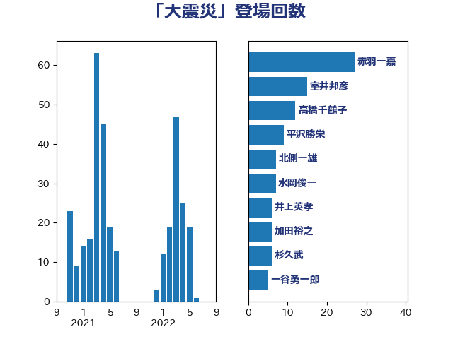

単語「大震災」

| 赤羽一嘉 | 公明党 | 27 回 |
| 室井邦彦 | 日本維新の会 | 15 回 |
| 高橋千鶴子 | 日本共産党 | 12 回 |
| 平沢勝栄 | 自由民主党 | 9 回 |
| 北側一雄 | 公明党 | 7 回 |
| 水岡俊一 | 立憲民主党 | 7 回 |
| 井上英孝 | 日本維新の会 | 6 回 |
| 加田裕之 | 自由民主党 | 6 回 |
| 杉久武 | 公明党 | 6 回 |
| 一谷勇一郎 | 日本維新の会 | 5 回 |
| 末松信介 | 自由民主党 | 5 回 |
| 若松謙維 | 公明党 | 5 回 |
| 金子恭之 | 自由民主党 | 5 回 |
| 小沢雅仁 | 立憲民主党 | 4 回 |
| 小西洋之 | 立憲民主党 | 4 回 |
| 小里泰弘 | 自由民主党 | 4 回 |
| 岩渕友 | 日本共産党 | 4 回 |
| 早坂敦 | 日本維新の会 | 4 回 |
| 清水貴之 | 日本維新の会 | 4 回 |
| 石垣のりこ | 立憲民主党 | 4 回 |
| 菅義偉 | 自由民主党 | 4 回 |
| 岸田文雄 | 自由民主党 | 3 回 |
| 松沢成文 | 日本維新の会 | 3 回 |
| 森山浩行 | 立憲民主党 | 3 回 |
| 江田憲司 | 立憲民主党 | 3 回 |
| 畦元将吾 | 自由民主党 | 3 回 |
| 美延映夫 | 日本維新の会 | 3 回 |
| 高良鉄美 | 無所属 | 3 回 |
| 麻生太郎 | 自由民主党 | 3 回 |
| 住吉寛紀 | 日本維新の会 | 2 回 |
| 吉川沙織 | 立憲民主党 | 2 回 |
| 城井崇 | 立憲民主党 | 2 回 |
| 小宮山泰子 | 立憲民主党 | 2 回 |
| 山下貴司 | 自由民主党 | 2 回 |
| 岡本あき子 | 立憲民主党 | 2 回 |
| 末松義規 | 立憲民主党 | 2 回 |
| 横沢高徳 | 立憲民主党 | 2 回 |
| 紙智子 | 日本共産党 | 2 回 |
| 芳賀道也 | 国民民主党 | 2 回 |
| 荒井優 | 立憲民主党 | 2 回 |
| 足立敏之 | 自由民主党 | 2 回 |
| 金子恵美 | 立憲民主党 | 2 回 |
| 鈴木敦 | 国民民主党 | 2 回 |
| 階猛 | 立憲民主党 | 2 回 |
| 下村博文 | 自由民主党 | 1 回 |
| 中川正春 | 立憲民主党 | 1 回 |
| 今井絵理子 | 自由民主党 | 1 回 |
| 伊波洋一 | 無所属 | 1 回 |
| 伊藤孝恵 | 国民民主党 | 1 回 |
| 伊藤孝江 | 公明党 | 1 回 |
| 伊藤岳 | 日本共産党 | 1 回 |
| 伊藤渉 | 公明党 | 1 回 |
| 佐々木さやか | 公明党 | 1 回 |
| 北神圭朗 | 無所属 | 1 回 |
| 古川元久 | 国民民主党 | 1 回 |
| 吉田忠智 | 立憲民主党 | 1 回 |
| 大西健介 | 立憲民主党 | 1 回 |
| 太田房江 | 自由民主党 | 1 回 |
| 宮本徹 | 日本共産党 | 1 回 |
| 小山展弘 | 立憲民主党 | 1 回 |
| 小沼巧 | 立憲民主党 | 1 回 |
| 山下芳生 | 日本共産党 | 1 回 |
| 山東昭子 | 自由民主党 | 1 回 |
| 山田太郎 | 自由民主党 | 1 回 |
| 岡本三成 | 公明党 | 1 回 |
| 後藤茂之 | 自由民主党 | 1 回 |
| 新妻秀規 | 公明党 | 1 回 |
| 新藤義孝 | 自由民主党 | 1 回 |
| 本田太郎 | 自由民主党 | 1 回 |
| 本田顕子 | 自由民主党 | 1 回 |
| 杉田水脈 | 自由民主党 | 1 回 |
| 松本尚 | 自由民主党 | 1 回 |
| 柴田巧 | 日本維新の会 | 1 回 |
| 梅村みずほ | 日本維新の会 | 1 回 |
| 森まさこ | 自由民主党 | 1 回 |
| 浅野哲 | 国民民主党 | 1 回 |
| 渡辺周 | 立憲民主党 | 1 回 |
| 熊谷裕人 | 立憲民主党 | 1 回 |
| 田村まみ | 国民民主党 | 1 回 |
| 田村憲久 | 自由民主党 | 1 回 |
| 田村智子 | 日本共産党 | 1 回 |
| 矢倉克夫 | 公明党 | 1 回 |
| 石井苗子 | 日本維新の会 | 1 回 |
| 礒崎哲史 | 国民民主党 | 1 回 |
| 神津たけし | 立憲民主党 | 1 回 |
| 茂木敏充 | 自由民主党 | 1 回 |
| 藤原崇 | 自由民主党 | 1 回 |
| 角田秀穂 | 公明党 | 1 回 |
| 谷田川元 | 立憲民主党 | 1 回 |
| 逢坂誠二 | 立憲民主党 | 1 回 |
| 野中厚 | 自由民主党 | 1 回 |
| 野田国義 | 立憲民主党 | 1 回 |
| 長友慎治 | 国民民主党 | 1 回 |
| 阿達雅志 | 自由民主党 | 1 回 |
| 馬場伸幸 | 日本維新の会 | 1 回 |
| 高橋光男 | 公明党 | 1 回 |
| 高階恵美子 | 自由民主党 | 1 回 |